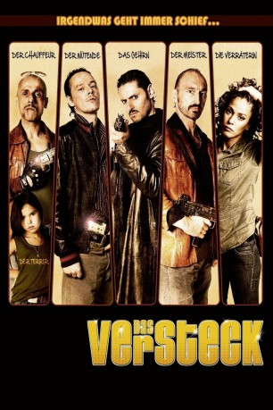

#11688 Das Versteck
 
 IMDB-Wertung: 5.1 / 10
IMDB-Wertung: 5.1 / 10  Metascore: 0
Metascore: 0 
Die drei Ganoven Kiko, Gilles und Pera planen und begehen gemeinsam einen Banküberfall. Die Beute: satte 50 Millionen Dollar. Doch als sie mitsamt dem Geld aus der Bankfiliale fliehen wollen, stellen sie zu ihrem Erschrecken fest, dass Titi, der Fahrer des Fluchtwagens, scheinbar kalte Füße bekommen hat und abgehauen ist. In Panik macht sich das halbstarke Trio auf die Suche nach einem neuen Versteck. Der Kopf der Bande Kiko schlägt verrückterweise die anliegende Polizeistation als Unterschlupf vor. Der Plan scheint zunächst tatsächlich zu funktionieren. Die Gauner fallen nicht auf und werden sogar für echte Polizisten gehalten. Aber es ist auch klar, aus dieser Situation kommen sie so schnell nicht einfach wieder heraus.
Jahr: 2011
Dauer: 89 Minuten
FSK: 12
Land: Frankreich Studio: UFATonspuren:
Untertitel:
Auflösung: 1080p (1920x1040) Größe: 8151 MB
Genre: Komödie, Krimi
Regisseur: Akim Isker
Drehbuch: Jalil Naciri
Soundtrack: Kalid Bazi
Darsteller:
- Jean-François Cayrey als Franck Salle
 Sebastien Vandenberghe als Stéphane
Sebastien Vandenberghe als Stéphane- Dany Verissimo-Petit als Nadège
- Oscar Copp als Laurent
- Jalil Naciri als Kiko
- Gilles Bellomi als Gilles
- Ahcen Titi als Titi
- Guillaume Verdier als Pera
- Samira Lachhab als Commandant Lydie Timonet
- Biyouna als La voyante
- Antoine Basler als Bertrand Doriano
- Marco Locci als Marco Lefebvre
- Ali Yaya als Kader
- Jean-Michel Correia als Paolo
- Virgile M'Fouilou als Michel
- Philippe Sax als José
- Fabien Aïssa Busetta als Angelo
- Frédéric Maranber als Gendarme
- Pierre Laplace als Commissaire Sorrel
 Corinne Masiero als Liliane
Corinne Masiero als Liliane- François Siener als Claude
- Jean-Pierre Lazzerini als J.F.
- Kamel Laadaili als Omar
- Grégory Bracco als Employé B.C.E.
- Christophe Sejor als Vigile B.C.E.
- Sophie Le Tellier als La mariée
- Yann Pradal als Le marié
- Farida Ouchani als La dame de service
- Moïse Santamaria als Capitaine Maresky
- Pascal Aubert als Capitaine Sanguinetti
- Antoine Régent als Policier 1
- Florent Niverd als Policier 2
- Lydie Waï als Flora
- Cémil Yaramis als Ouvrier commissariat 1
- Adem Yaramis als Ouvrier commissariat 2
- Daniel Yaramis als Ouvrier commissariat 3
- Djilali Ouadah als Policier P.A.F.
- Stéphane Boulay als Le conducteur 4x4
- Ilyana Naciri als Nina
- Thami Naciri als Thami
- Ylann Caille als Tony
- Bilal Correia als Illyès
- Gianna Caira als Didine
- Hamza Nourou als Sekkou
- David Carvalho-Jorge als Enzo
- Atahana An'bert als
- Gérald Raynaud als Policier
- Renato Ribeiro als Policier
- Lydie Solomon als Flora
- Jeff Gerard als Policier (uncredited)
Datei: X:\NEU\Versteck, Das (2011, FSK12, 1920x1040).mkv seit 19.08.2019
 Es gibt insgesamt 187 Filme in der Gruppe 'NEU'
Es gibt insgesamt 187 Filme in der Gruppe 'NEU'